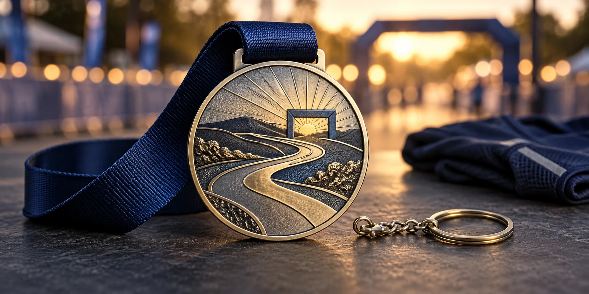

La ruta y el instante de llegada pueden convertirse en el motivo central, sin llenar la medalla de texto.
Una medalla finisher personalizada recuerda algo más que una fecha: el recorrido, el esfuerzo y la identidad de la carrera. Diseñarla para que siga teniendo sentido después de cruzar la meta empieza por elegir una historia visual concreta y comprobar que la pieza funciona en la mano, en las fotos y en el uso previsto.
Hay ejemplos recientes de formatos distintos a la cinta tradicional. En su presentación del After Dark Tour 2026, Nike explicó que su medalla podía llevarse como collar, pulsera, llavero o cadena para el cinturón. Es una decisión de diseño de una marca concreta, no una prueba de que todos los corredores prefieran medallas convertibles; sí demuestra una posibilidad que un organizador puede valorar según su público y presupuesto. En España, el calendario oficial sitúa el Maratón de Valencia 2026 el 6 de diciembre. Para otras ediciones, planifica con tiempo de diseño, muestra, producción y transporte, no solo con la fecha de carrera.
1. Elige una historia visual de la carrera
Antes de pensar en el acabado, responde: ¿qué hará que alguien reconozca esta medalla dentro de un año? Elige un motivo principal que pertenezca a la prueba: una curva característica del recorrido, un perfil urbano, un puente, una montaña, una línea de meta o un símbolo propio de la comunidad.
Una composición sencilla suele leerse mejor que intentar incluir cada kilómetro, patrocinador y dato en la misma cara. Un brief visual útil puede combinar:
- Motivo protagonista: una forma o escena reconocible de la ruta.
- Datos de edición: nombre, año y distancia con jerarquía legible.
- Reverso: mensaje breve, categoría o espacio para personalización si realmente se necesita.
Si se representa un mapa, monumento, escudo o identidad de un tercero, confirma que la organización tiene permiso para utilizarlo. Para una carrera por varias distancias, define si cada variante cambia texto, color, cinta o forma antes de encargar el arte final.
2. Decide cómo se conservará después de la meta
La medalla no tiene que convertirse en un accesorio para ser memorable: una cinta cómoda y una pieza bien diseñada ya pueden cumplir el propósito. Si interesa un uso adicional, compara opciones antes de cerrar el molde. El formato afecta el punto de sujeción, el peso, el borde, el equilibrio y el presupuesto.
| Uso previsto | Qué definir | Qué probar en la muestra |
|---|---|---|
| Recuerdo tradicional | Cinta, ancho, impresión y aro. | Caída, comodidad y lectura de la gráfica. |
| Pieza para exhibir o vestir | Forma, relieve, acabado y reverso. | Legibilidad, peso y bordes sin aristas molestas. |
| Uso alternativo | Aro o accesorio independiente compatible. | Fijación, resistencia y facilidad de montaje. |
Una medalla que se lleva durante una carrera debe seguir las reglas del organizador y no engancharse con la ropa o el equipo. Si se propone un accesorio para después, descríbelo como una opción separada y valida su resistencia; no des por hecho que cualquier pieza puede transformarse con seguridad en llavero o joya.
3. Mantén clara la información en la pieza
Revisa el arte al tamaño real, no solo ampliado en pantalla. El nombre de la carrera, año y distancia deben distinguirse del motivo. Si hay demasiados logotipos, mueve información secundaria a la cinta, al reverso o a una tarjeta de entrega, siempre con autorización de marcas y patrocinadores.
El relieve puede separar planos de una ruta o una silueta; el esmalte puede ayudar a diferenciar áreas o colores oficiales. Una combinación de texturas también puede aportar contraste sin multiplicar el número de colores. Compara las opciones en nuestra guía de acabados metálicos y relieve, y consulta la guía técnica de medallas para carreras y eventos para especificar diámetro, grosor, cinta y empaque.
4. Prueba el diseño fuera de la pantalla
Antes de aprobar una medalla personalizada para carrera, revisa una representación a escala y una muestra física cuando el calendario lo permita. Comprueba la cara frontal y el reverso, la posición del aro, la cinta, el acabado bajo luz y cómo se ve en una fotografía de llegada. Si existen variantes por distancia, compara todas juntas para que la familia se reconozca y cada categoría se distinga.
- Comprueba que el motivo se entienda a primera vista y en una foto reducida.
- Verifica que texto, año y distancia no queden ocultos por la cinta o el aro.
- Revisa peso, bordes, cierre y resistencia según el uso acordado.
- Confirma colores, cantidades por distancia, empaquetado y fecha de recepción.
La ficha de medallas y tokens metálicos indica que el plazo depende del diseño y del pedido. Pide una fecha realista que incluya aprobación de arte, muestra, fabricación, control y transporte. Para una referencia de solución ya fabricada, consulta nuestro caso de medallas para carrera.
Brief rápido para solicitar una propuesta
- Nombre, ciudad, fecha y distancias de la carrera.
- Idea visual principal: ruta, paisaje, símbolo o historia de meta.
- Logotipos autorizados y jerarquía de patrocinadores.
- Uso previsto: cinta, exhibición o accesorio posterior.
- Cantidad por distancia, acabado, empaque y destino de entrega.
- Fecha límite para aprobar muestras y recibir el pedido.
También puedes revisar el proceso de pedido personalizado y los factores que influyen en una cotización. Comparte la fecha desde el primer mensaje: facilita valorar si el diseño propuesto cabe en el calendario.
Preguntas frecuentes sobre medallas finisher
¿Qué es una medalla finisher?
Es una medalla conmemorativa que la organización entrega a quienes completan una carrera o reto. Puede recordar el recorrido, la distancia, la edición y la identidad del evento.
¿Una medalla de carrera puede usarse como accesorio después?
Sí, si organizador y fabricante definen una opción compatible desde el principio, como una cinta, un aro o un accesorio separado. Hay que validar peso, bordes, cierre y resistencia para el uso previsto.
¿Cuándo debo pedir una medalla personalizada para una carrera?
Con margen para diseño, muestra, aprobación, producción y transporte. El plazo cambia con el diseño, cantidad, acabado y destino; comparte la fecha del evento para confirmar un calendario realista.
Referencias y lecturas relacionadas
- Nike: medalla del After Dark Tour 2026, ejemplo publicado de una medalla con varias opciones de uso posterior.
- Valencia Ciudad del Running: presentación y fecha del Maratón Valencia 2026.
Estos enlaces sirven como referencias de casos y calendario; no son estudios de preferencia de consumidores ni una promesa de que una característica concreta aumente las inscripciones.
Explora nuestras medallas metálicas personalizadas o solicita una cotización con la fecha, distancia y cantidad previstas.